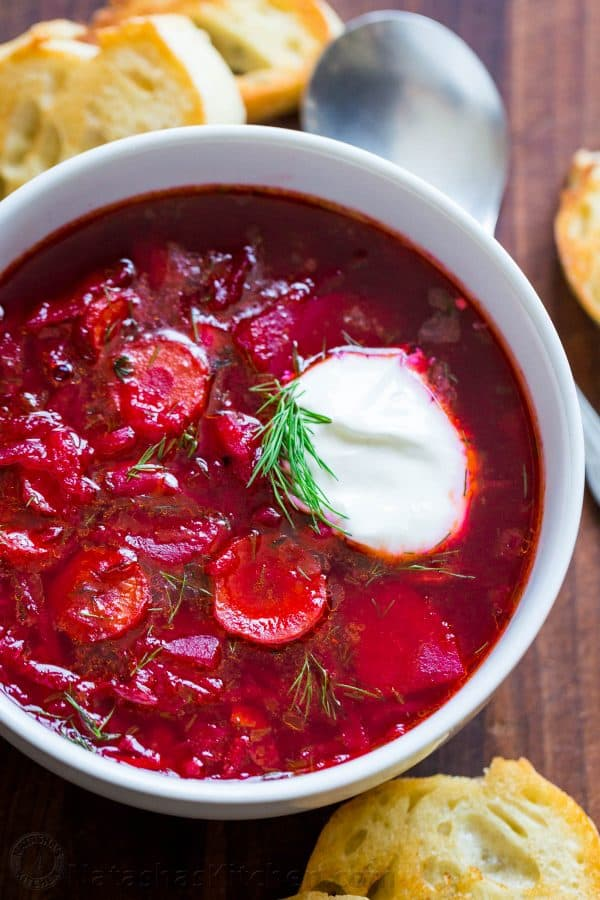

Borscht

Description
Prep time:
30 mins
Cook time:
2 hrs 30 mins
Additional Time:
15 mins
Service:
12
Ingredients
Steps
- Make the meat sauce
- Cook the noodles
- Make the ricotta mixture
- Layer the lasagna according to the recipe instructions
- Cover with foil and bake
- Let the lasagna rest before serving